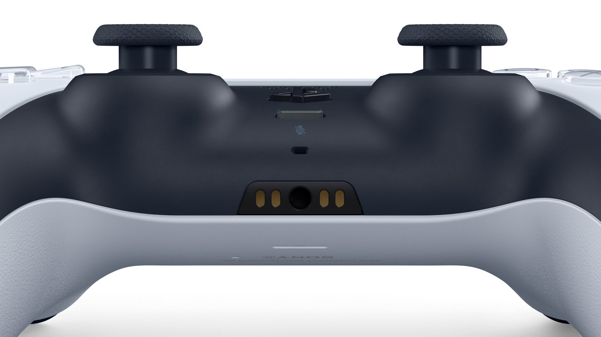
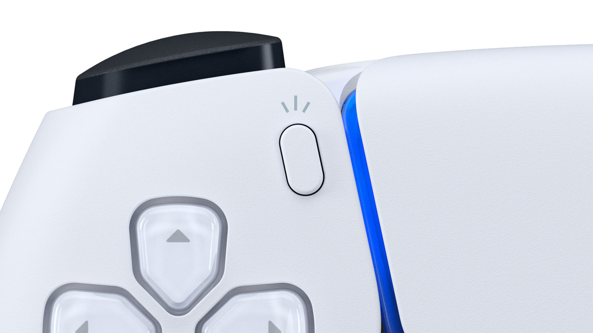

DualSense™ 무선 컨트롤러
DualSense™ 무선 컨트롤러
햅틱 피드백과 다이나믹 트리거 효과*1 기능을 갖춘 혁신적인 PS5™ 컨트롤러로 더욱 심도 있고 완전히 몰입하게 되는 게이밍 경험*2을 직접 느껴보세요. 아이코닉하면서 사용 편의성까지 고려한 디자인의 DualSense 무선 컨트롤러에는 내장 마이크와 만들기 버튼이 탑재되어 있습니다.
내장 마이크 및 헤드셋 잭
내장 마이크를 사용하거나 3.5mm 잭에 헤드셋을 연결하여 친구들과 온라인으로 대화하세요3. 전용 음소거 버튼을 사용하여 음성 캡처를 즉시 끌 수 있습니다.
만들기 버튼
만들기 버튼으로 최고의 게임플레이 순간을 녹화해 방송으로3내보내 보세요. 선도적인 Share 버튼의 성공을 토대로 탄생한 "만들기" 버튼은 플레이어가 자신의 게이밍 콘텐츠를 제작하고 게임 속 모험을 온 세상에 라이브로 방송할 수 있는 새로운 방법을 제시합니다.